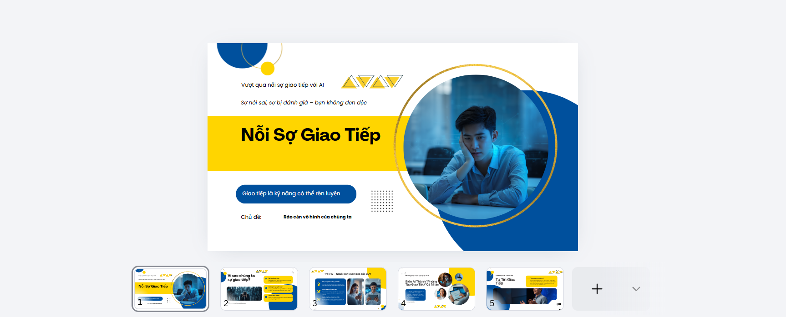
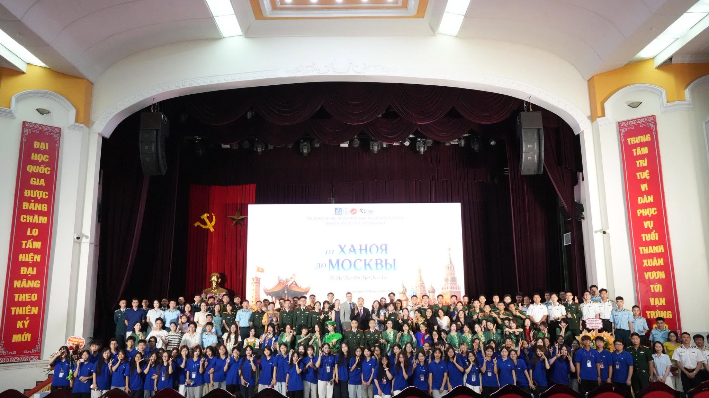

Mình là Ngô Gia Linh, sinh viên khóa QH2025, Khoa Ngôn ngữ và Văn hóa Nga, Trường Đại học Ngoại ngữ - ĐHQGHN. Ngoài giờ học, mình thích nghe nhạc và xem phim — đây cũng là cách mình giữ động lực và tiếp xúc thêm với ngôn ngữ, văn hóa nước ngoài một cách tự nhiên.
NGÔ GIA LINH
Giới thiệu
Sinh viên Ngôn ngữ Nga, rèn giao tiếp mỗi ngày, học cách dùng công nghệ số để đi xa hơn trên con đường trở thành phiên dịch viên.
Mình đang tập trung cải thiện và phát triển kỹ năng giao tiếp — cả trong tiếng Nga lẫn khả năng ứng dụng ngôn ngữ vào thực tế. Định hướng nghề nghiệp của mình là trở thành phiên dịch viên, vì vậy mình xem việc trau dồi phản xạ ngôn ngữ và vốn hiểu biết văn hóa là ưu tiên hàng đầu trong quá trình học tập.
Portfolio này được mình xây dựng để lưu trữ lại các sản phẩm học tập trong quá trình học môn Nhập môn Công nghệ số và Ứng dụng Trí tuệ nhân tạo, đồng thời thể hiện những kỹ năng số mình đã tích lũy được. Xa hơn, mình mong đây sẽ là nền tảng hữu ích cho hồ sơ cá nhân khi mình bắt đầu tìm kiếm cơ hội nghề nghiệp trong tương lai.
Thông tinQH2025Khoa Ngôn ngữ và Văn hóa Nga
Sở thíchÂm nhạc · Điện ảnhNghe nhạc và xem phim
Mục tiêuPhát triển giao tiếpTiếng Nga và ứng dụng thực tế
Định hướngPhiên dịch viênNgôn ngữ Nga
6 bài tập
SÁU CHẶNG CỦA MỘT HÀNH TRÌNH SỐ
Trang chủ chỉ giới thiệu tổng quan. Chọn từng bài để mở trang chi tiết riêng với đầy đủ nội dung, bảng và ảnh minh chứng theo đúng thứ tự.

01 · Digital foundations
Quản lý tệp tin và thư mục
Thực hành tạo, đổi tên, sao chép, di chuyển, xóa và khôi phục tệp tin trên Windows.
Xem chi tiết ↗
02 · Academic research
Tìm kiếm và đánh giá thông tin học thuật
Khảo sát ảnh hưởng của tiếng Anh đối với từ vựng kinh tế trong tiếng Nga đương đại.
Xem chi tiết ↗
03 · Prompt design
Viết prompt hiệu quả cho các tác vụ
So sánh prompt cơ bản, cải tiến và nâng cao cho các tác vụ học tập bằng AI.
Xem chi tiết ↗
04 · Team workflow
Công cụ hợp tác trực tuyến cho dự án nhóm
Tổ chức công việc nhóm bằng Trello, Google Docs, Google Drive và Discord.
Xem chi tiết ↗
05 · Creative AI
AI tạo sinh hỗ trợ sáng tạo nội dung
Phát triển cẩm nang số bằng nhiều công cụ AI tạo sinh và đóng góp sáng tạo cá nhân.
Xem chi tiết ↗
06 · Responsible AI
Sử dụng AI có trách nhiệm trong học tập
Phân tích chính sách, đạo đức, trích dẫn và nguyên tắc sử dụng AI minh bạch.
Xem chi tiết ↗Tổng kết
TỔNG KẾT
Trải nghiệm cá nhân
Nhìn lại quá trình thực hiện dự án Portfolio này, mình cảm thấy môn học không quá khó nhưng cũng không dễ để hoàn thành thật tốt. Mỗi bài tập đòi hỏi mình phải thực sự hiểu và thực hành, chứ không chỉ làm cho có. Trong đó, thử thách lớn nhất với mình là làm quen với việc viết prompt theo đúng quy tắc để đạt hiệu quả tốt nhất khi làm việc với AI — đây là kỹ năng khá mới, cần thời gian luyện tập mới nắm được.
Kỹ năng quan trọng nhất đã học được
Trong số các kỹ năng đã học, mình thấy kỹ năng tìm kiếm thông tin và hợp tác trực tuyến là hữu ích nhất đối với bản thân. Là sinh viên ngành Ngôn ngữ và Văn hóa Nga, định hướng trở thành phiên dịch viên, việc biết cách tìm kiếm, chọn lọc và đánh giá thông tin chính xác sẽ giúp mình tra cứu thuật ngữ, tài liệu chuyên ngành hiệu quả hơn rất nhiều. Bên cạnh đó, kỹ năng hợp tác trực tuyến cũng rất thiết thực, vì công việc phiên dịch trong tương lai chắc chắn sẽ cần phối hợp với nhiều người, nhiều nền tảng làm việc khác nhau.
Thách thức và cách vượt qua
Khó khăn lớn nhất với mình là kỹ năng viết prompt. Ban đầu, mình thường viết yêu cầu khá chung chung nên kết quả AI trả về chưa sát với mong muốn. Sau khi thực hành nhiều lần và học cách áp dụng các nguyên tắc như nêu rõ vai trò, bối cảnh và định dạng đầu ra mong muốn, mình dần cải thiện được chất lượng prompt của mình, từ đó khai thác AI hiệu quả hơn cho việc học tập.

